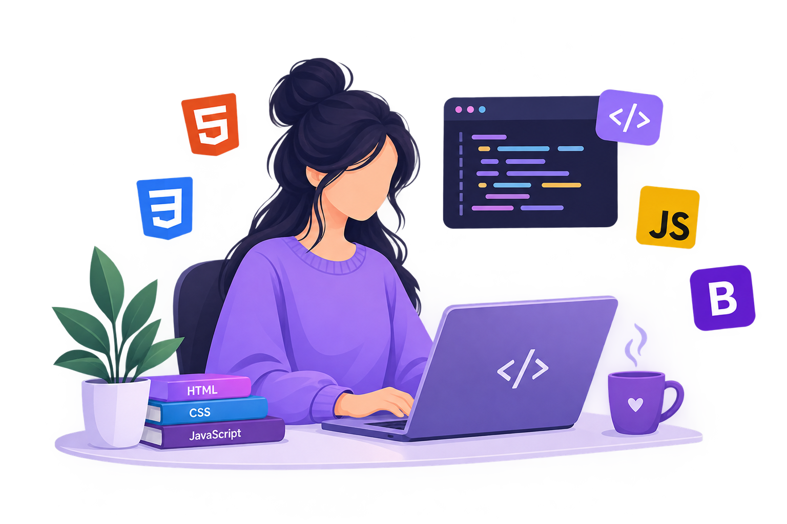

About
Home / About
About Me
Hi, I'm Munazza Bukhari, a BS Computer Science graduate and passionate Frontend Web Developer. I enjoy creating modern, responsive, and user-friendly websites using HTML, CSS, JavaScript, and Bootstrap. I love turning creative ideas into functional web designs and continuously improving my coding skills through practical projects. My goal is to build attractive websites that provide a smooth user experience and grow as a professional Frontend Web Developer.
🎓BS Computer Science(2019 – 2023)
♡Passionate aboutWeb Development
◎GoalBecome a Professional Frontend Developer

What I do
I build with HTML, CSS, JavaScript and Bootstrap, and I am learning something new with every project.
See my projects Get in touch